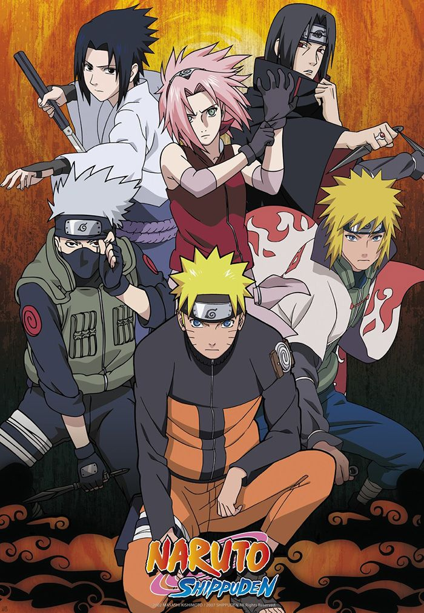

Demon Slayer
Demon Slayer (Kimetsu no Yaiba) é uma franquia japonesa sobre o bondoso jovem Tanjiro Kamado, que se
torna um caçador de demônios após o massacre de sua família e a transformação de sua irmã Nezuko em
um deles. Ele entra para o Demon Slayer
Corps para vingar sua família, encontrar uma cura para Nezuko e derrotar o Rei Demônio, Muzan
Kibutsuji, usando as técnicas de respiração e uma espada forjada com uma lâmina solar. .

Dragon Ball Super
Dragon Ball Super é a sequência oficial da franquia Dragon Ball, criada por Akira Toriyama e
Toyotaro. A história se passa após a derrota de Majin Boo, durante o intervalo de dez anos antes do
28º Torneio de Artes Marciais. A narrativa expande o universo
da série, explorando novos personagens, transformações e a vastidão de uma cosmologia com deuses e
universos paralelos.

One Piece
One Piece é o nome do tesouro deixado pelo Rei dos Piratas Gol D. Roger, que está localizado na ilha
final da Grand Line, Laugh Tale. A história acompanha Monkey D. Luffy e sua tripulação, os Piratas
do Chapéu de Palha, enquanto buscam
este tesouro para que Luffy possa se tornar o próximo Rei dos Piratas. Escrito e ilustrado por
Eiichiro Oda, o mangá é um sucesso global de ação, aventura e fantasia. .

Attack on Titan
Attack on Titan (ou Ataque dos Titãs) é um anime e mangá que se passa em um mundo pós-apocalíptico,
onde a humanidade vive atrás de imensas muralhas para se proteger de titãs gigantes que devoram
humanos. A história segue Eren Yeager e seus amigos Mikasa Ackerman e Armin Arlert, que juram
vingança contra os titãs após um ataque devastador à sua cidade. Eles se juntam à Divisão de
Reconhecimento, um grupo de elite que luta contra os titãs, enquanto tentam desvendar os mistérios
por trás de sua existência e o passado da humanidade.
One-Punch Man
One-Punch Man é um mangá e anime sobre Saitama, um herói por diversão que é tão poderoso que consegue
derrotar qualquer inimigo com um único soco, o que o deixa frustrado pela falta de desafios e o leva
a buscar adversários mais fortes. Acompanhado por seu discípulo ciborgue, Genos, Saitama entra na
Associação de Heróis para ganhar reconhecimento, mas sua aparência simples e força inquestionável o
tornam desrespeitado pelos outros heróis e pelo público, apesar de salvar a todos.

Naruto Shippuden
Naruto é uma série de mangá e anime que segue as aventuras de Naruto Uzumaki, um jovem ninja da Vila
Oculta da Folha que busca reconhecimento, sonha em se tornar o líder da vila (o Hokage) e proteger
seus amigos. O protagonista tem um demônio raposa de nove caudas selado dentro de si desde o
nascimento, o que o levou a ser rejeitado pela vila, mas também o impulsionou a buscar a admiração e
o respeito que nunca teve.

Solo Leveling
Solo Leveling é um anime baseado em uma popular web novel sul-coreana sobre Sung Jinwoo, o caçador
mais fraco de um mundo onde humanos com habilidades mágicas lutam contra monstros que surgem de
portais, ou "dungeons". Após sobreviver a uma dungeon mortal, Jinwoo ganha o "Sistema", um programa
que o permite subir de nível e fortalecer-se como um jogador de RPG, transformando-o de presa em
predador. A história acompanha a jornada dele para se tornar o caçador mais poderoso, descobrindo os
segredos dos portais e dominando a classe de necromante.

Boku no Hero
"Boku no Hero" (My Hero Academia) é um anime e mangá sobre Izuku Midoriya, um garoto nascido sem
poderes ("Individualidades") em um mundo onde a maioria das pessoas os tem, que sonha em se tornar
um super-herói. Após encontrar o herói número um, All Might, ele herda parte do seu poder, ganha uma
"Individualidade" e entra em uma escola de heróis para se tornar profissional. A história acompanha
sua jornada, o desenvolvimento dos personagens e a diversidade de poderes em uma sociedade de heróis
e vilões, explorando temas como perseverança e superação de sonhos.

Nanatsu no Taizai
Nanatsu no Taizai é uma série de mangá e anime que se passa no reino de Britânia, onde a princesa
Elizabeth busca os Sete Pecados Capitais, um grupo de cavaleiros exilados. Dez anos após serem
acusados de traição e considerados os vilões do reino, eles são chamados para ajudar a princesa a
retomar o trono, que foi tomado pelos Cavaleiros Sagrados em um golpe de estado.

Blue Lock
Blue Lock é um mangá e anime sobre futebol focado na criação do maior atacante do mundo através de um
programa radical de treinamento com 300 jovens jogadores. Após a eliminação do Japão na Copa do
Mundo, o programa Blue Lock reúne os melhores atacantes do país para uma competição de eliminação,
onde apenas um atacante egoísta será selecionado para a seleção japonesa.